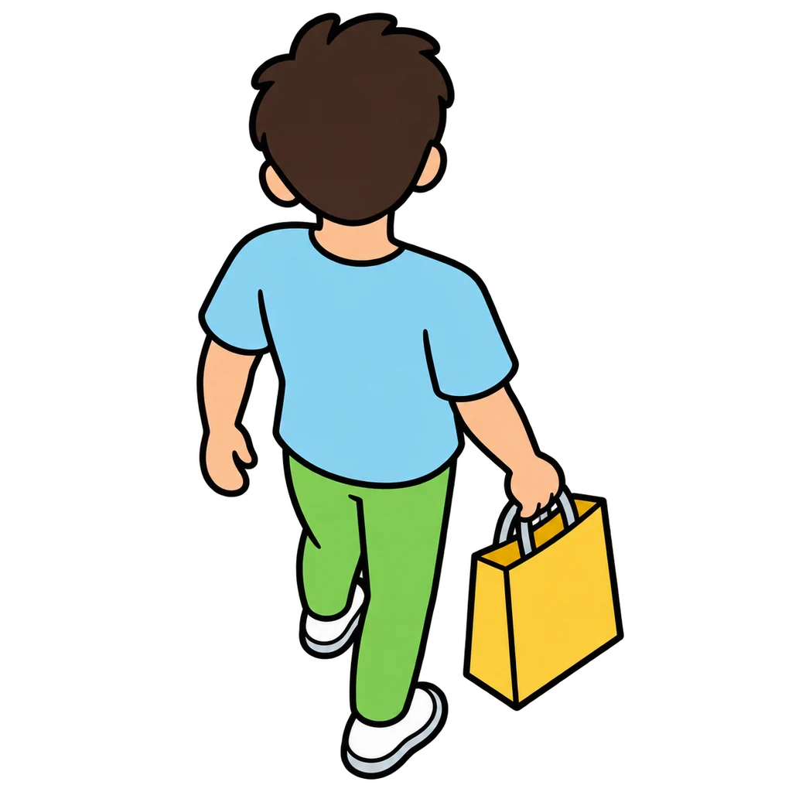
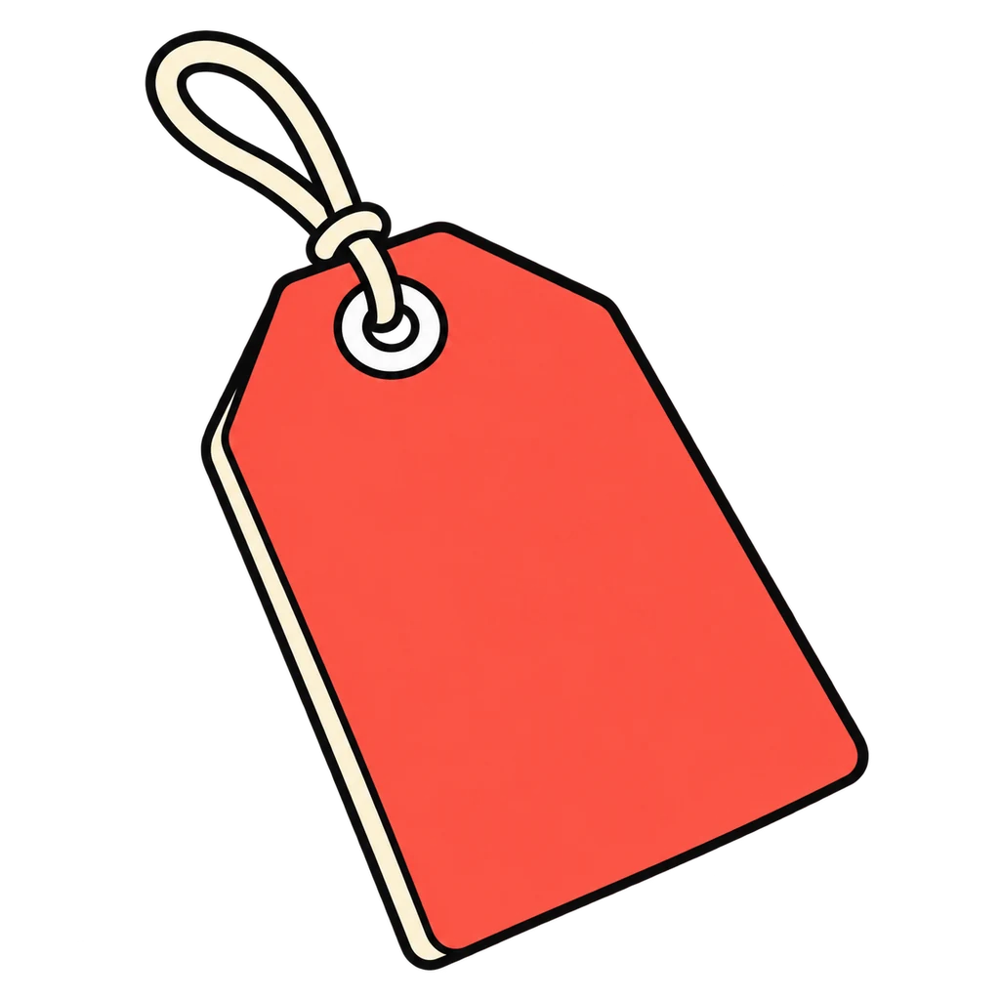

Reviews Lesson 7.6, Lesson 7.8, Lesson 7.9, Lesson 7.1. This game reviews Lesson 7.6, What a Business Is, Lesson 7.8, Know Your Customer and Price It, and Lesson 7.9, The Elevator Pitch, plus the three-part bullet from Lesson 7.1. Round 1: a problem card and a customer card; the player builds a short pitch from five columns (problem, customer, product, price, ask), and each column is scored against the Rubric 07 lines: the problem names who has it, the customer is specific, the product solves that problem, the price fits what the customer can spend and comes with a number, the ask names something specific with a number that fits the product. Round 2 is fast: tap the resume bullet that has all three parts (the work, the explanation, the output). Use it as the do now before Lesson 7.10. Nothing is saved when the page closes.
Pitch Perfect
A problem and a customer. Build the pitch one column at a time, and make every piece fit the piece before it. Then the fast round: which resume bullet has all three parts?
How to play
- The strong bullet says what you did, how and for whom, and what came out of it, with a number.

